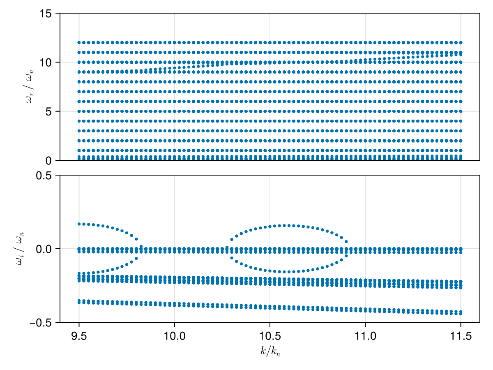

Case: Ion cyclotron emission
Ion cyclotron emission (ICE) driven by a ring ion beam distribution in a magnetized fusion device
using PlasmaBO
using PlasmaBO: gyrofrequency, Alfven_speed
using DelimitedFiles
# Magnetic field (Tesla)
B0 = 2.1
# Wave vector angle between k and B0
θ = deg2rad(89.5)
# Species table taken from the original BO MATLAB input
fpath = pkgdir(PlasmaBO, "test/ice_Irvine18.in")
readdlm(fpath)4×8 Matrix{Any}:
"qs(e)" "ms(m_unit)" "ns(m^-3)" … "vdsz/c" "vdsr/c" "ifv(1/0)"
2 4.0 1.0e16 0.0 0.045 1
1 2.0 9.98e18 0.0 0.0 1
-1 0.0005447 1.0e19 0.0 0.0 1Dispersion Curve Scan
tbl = readdlm(fpath, Float64; skipstart = 1)
species = map(eachrow(tbl)) do row
Z, A, n_s, Tz_s, Tp_s, vdz_s, vdr_s = row[1:7]
Maxwellian(n_s, Tz_s, Tp_s; vdz = vdz_s, vdr = vdr_s, Z , A)
end
ωn = gyrofrequency(B0, species[1])
vA = Alfven_speed(B0, species)
kn = ωn / vA
ks = (9.5:0.025:11.5) .* kn
results = solve(species, B0, ks, θ; N = 12, J = 4)PlasmaBO.DispersionSolution{StepRangeLen{Float64, Base.TwicePrecision{Float64}, Base.TwicePrecision{Float64}, Int64}, Float64, Matrix{Vector{ComplexF64}}}(93.30054330562844:0.24552774554112747:112.94276294891863, 1.562069680534925, Vector{ComplexF64}[[-4.431570101700056e12 - 1.855190613452381e7im, -4.431570101700051e12 - 1.855190613421118e7im, -4.431570101700046e12 - 1.8551906135112494e7im, -4.431557011709512e12 - 2.062794004825073e7im, -4.431557011709484e12 - 2.0627940047972504e7im, -4.431557011709463e12 - 2.062794004882524e7im, -4.431545449453733e12 - 2.062794004867354e7im, -4.431545449453717e12 - 2.0627940047118716e7im, -4.431545449453705e12 - 2.0627940048311792e7im, -4.431532359463166e12 - 1.8551906135012664e7im … 4.431532359463172e12 - 1.8551906135440826e7im, 4.43154544945372e12 - 2.062794004782009e7im, 4.431545449453722e12 - 2.0627940047381654e7im, 4.431545449453744e12 - 2.0627940048230477e7im, 4.43155701170948e12 - 2.0627940046995226e7im, 4.431557011709486e12 - 2.0627940049394995e7im, 4.431557011709507e12 - 2.062794004840756e7im, 4.431570101700037e12 - 1.8551906133552264e7im, 4.431570101700065e12 - 1.85519061340332e7im, 4.431570101700074e12 - 1.855190613321209e7im]; [-4.431570151360928e12 - 1.8600726940503437e7im, -4.431570151360917e12 - 1.8600726940705877e7im, -4.431570151360889e12 - 1.8600726939575195e7im, -4.431557026923017e12 - 2.0682224100024223e7im, -4.431557026923016e12 - 2.068222410016122e7im, -4.431557026922984e12 - 2.0682224100809574e7im, -4.431545434240246e12 - 2.068222410125351e7im, -4.43154543424024e12 - 2.068222409986713e7im, -4.431545434240232e12 - 2.0682224101507995e7im, -4.431532309802394e12 - 1.8600726939555995e7im … 4.431532309802339e12 - 1.8600726940226104e7im, 4.431545434240205e12 - 2.06822241012234e7im, 4.431545434240214e12 - 2.0682224101106457e7im, 4.431545434240243e12 - 2.068222410056576e7im, 4.431557026922981e12 - 2.068222410047009e7im, 4.431557026923002e12 - 2.0682224100749947e7im, 4.431557026923007e12 - 2.0682224100213543e7im, 4.431570151360898e12 - 1.8600726940281045e7im, 4.431570151360899e12 - 1.8600726941487595e7im, 4.431570151360916e12 - 1.860072694008395e7im]; … ; [-4.431574024906269e12 - 2.240874977636841e7im, -4.431574024906242e12 - 2.2408749778320312e7im, -4.431574024906237e12 - 2.2408749776634444e7im, -4.431558213575576e12 - 2.491638021631661e7im, -4.431558213575566e12 - 2.491638021642399e7im, -4.431558213575546e12 - 2.491638021557085e7im, -4.431544247587659e12 - 2.491638021484375e7im, -4.431544247587651e12 - 2.491638021456312e7im, -4.431544247587638e12 - 2.491638021826585e7im, -4.431528436256965e12 - 2.2408749776226956e7im … 4.431528436256967e12 - 2.240874977804662e7im, 4.431544247587659e12 - 2.491638021615343e7im, 4.431544247587665e12 - 2.4916380216732908e7im, 4.431544247587668e12 - 2.4916380215369686e7im, 4.431558213575552e12 - 2.4916380216657188e7im, 4.431558213575571e12 - 2.4916380215964794e7im, 4.431558213575578e12 - 2.491638021447754e7im, 4.43157402490625e12 - 2.2408749778076172e7im, 4.431574024906264e12 - 2.240874977838619e7im, 4.431574024906277e12 - 2.240874977889633e7im]; [-4.431574074567137e12 - 2.2457570584764916e7im, -4.431574074567093e12 - 2.2457570584054906e7im, -4.431574074567086e12 - 2.2457570583497364e7im, -4.431558228789076e12 - 2.4970664268011354e7im, -4.431558228789052e12 - 2.497066426933888e7im, -4.431558228789034e12 - 2.4970664269589312e7im, -4.431544232374177e12 - 2.497066426786269e7im, -4.431544232374155e12 - 2.4970664267487377e7im, -4.431544232374148e12 - 2.497066426855469e7im, -4.43152838659611e12 - 2.2457570583984368e7im … 4.4315283865961045e12 - 2.2457570582367286e7im, 4.431544232374132e12 - 2.4970664267947245e7im, 4.431544232374162e12 - 2.4970664268853128e7im, 4.431544232374165e12 - 2.497066426816729e7im, 4.431558228789056e12 - 2.497066426847267e7im, 4.431558228789059e12 - 2.49706642685242e7im, 4.431558228789066e12 - 2.497066426882077e7im, 4.431574074567074e12 - 2.2457570582558423e7im, 4.431574074567092e12 - 2.2457570583618164e7im, 4.431574074567105e12 - 2.245757058236661e7im];;])using CairoMakie
f, (ax, ax2) = plot(results, kn, ωn)
ylims!(ax, [0, 15])
ylims!(ax2, [-0.5, 0.5])
f